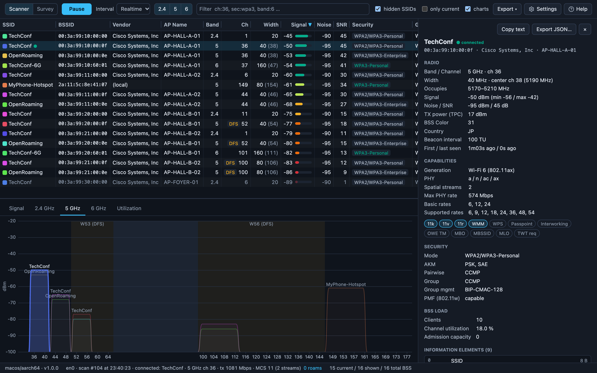
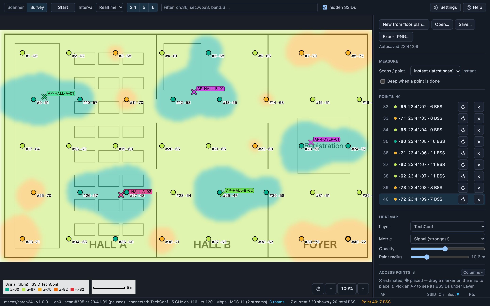
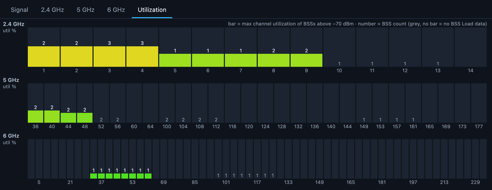
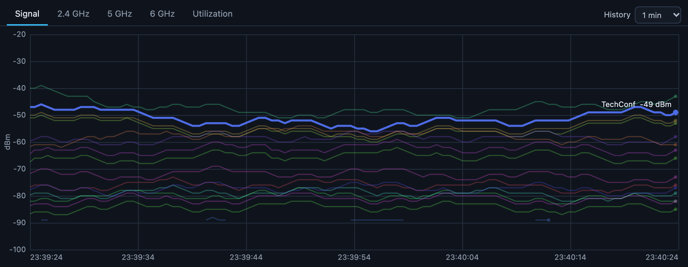
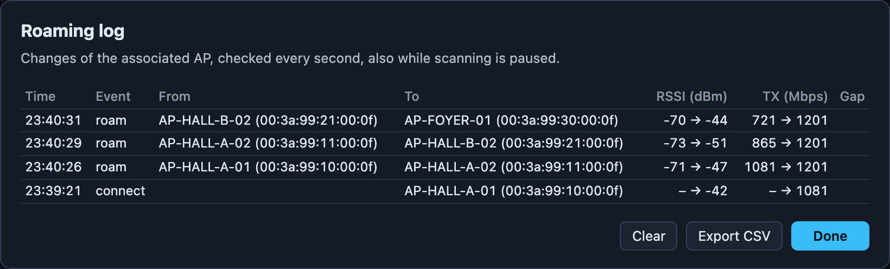

WiFiSight
AP ホスト名がそのまま見える
Wi-Fi スキャナ
Wi-Fi の現場調査に特化。事前の調査から設置後の確認、運用中の監視まで、これ 1 つで。
macOS、Windows、Linux に対応。無料で使えます。

- 周囲の BSS を一覧にSSID、BSSID、ベンダー、AP ホスト名、チャネルと帯域幅、RSSI、セキュリティ、接続数、チャネル使用率などを並べて表示します。
- IE をすべてデコード一覧で選んだ BSS の情報要素（IE）をすべて読み解き、対応機能や 11k/v/r も表示します。
- 絞り込みと書き出し
band:5 !sec:open, rssi<-75のような条件で絞り込めます。一覧は CSV、セッション全体は JSON に書き出せます。
現場で役立つ 3 つの特徴
AP ホスト名をそのまま表示
AP がビーコンで通知しているホスト名を、一覧にそのまま表示します。BSSID を管理画面と突き合わせなくても、電波の弱い AP や調子の悪い AP がその場で分かります。多くの業務用 AP ベンダーの形式に対応しています。
AP ホスト名は、コントローラ側で通知を有効にしたときだけビーコンに載ります（Aruba の advertise-ap-name など）。
計測は Probe にお任せ
Raspberry Pi やミニ PC で wifisight-cli serve を動かすと、計測をそのデバイスに任せられます。離れた場所に置けば、そこの電波を LAN 越しに監視できます。
手元に置く使い方もできます。Probe はどこにも接続しないので OS にスキャンを間引かれず、毎回同じ条件で計測できます。その間も PC はネットにつないだままです。
どの OS でも同じ解析
macOS、Windows、Linux で動きます。スキャン結果の解析は共通のコアで行うので、どの PC で測っても同じ電波なら同じ結果になります。
OS から取得できる項目には一部違いがあります（OS ごとの違い）。
調査
フロアの図面を開き、今いる場所をクリックすると計測します。ヒートマップを描き、AP の位置も推定します。

- 4 種類のヒートマップ最も強い信号、ローミング先になる 2 番目の AP、同一チャネルの AP 数、SNR を、SSID、AP、BSSID ごとに表示できます。
- 1 地点の計測回数を選べる最新のスキャンをすぐ記録するか、1、3、5 回スキャンして平均するかを選べます。
- 保存と書き出し
.survey.jsonに保存して後から開き直せます。報告用に PNG でも書き出せます。
チャネル使用率
チャネルごとの混み具合を、各 AP が通知する BSS Load から集計して表示します。2.4、5、6 GHz の BSS は、実際のチャネル幅でスペクトラムにも描けます。

信号強度の推移
直近 1 分から 1 時間まで、すべての BSS の信号強度をグラフにします。一覧で選んだ BSS は太線で強調します。

ローミング
接続中の AP を毎秒確認し、切り替わるたびに前後の RSSI と通信レートを記録します。スキャンを止めている間も確認は続きます。

コマンドライン
wifisight-cli は、GUI と同じ解析結果を表、JSON、JSONL ログで出力します。外部 Probe もこれで動かします。Linux（x86_64、arm64）、macOS、Windows 用があります。
$ wifisight-cli scan
SSID BSSID BAND CH CTR WIDTH RSSI SECURITY PHY MAXRATE STA UTIL VENDOR / AP
TechConf 00:3a:99:10:00:00 2.4 1 1 20 -45 WPA2/WPA3-Personal b/g/n/ax 287 12 41% Cisco Systems, Inc / AP-HALL-A-01
TechConf 00:3a:99:10:00:0f 5 36 38 40 -50 WPA2/WPA3-Personal a/n/ac/ax 574 10 18% Cisco Systems, Inc / AP-HALL-A-01
OpenRoaming 00:3a:99:10:00:0e 5 36 38 40 -53 WPA2/WPA3-Enterprise a/n/ac/ax 574 4 18% Cisco Systems, Inc / AP-HALL-A-01
TechConf-6G 00:3a:99:10:60:01 6 37 47 160 -54 WPA3-Personal ax 2402 7 9% Cisco Systems, Inc / AP-HALL-A-01
TechConf 00:3a:99:11:00:0f 5 44 46 40 -65 WPA2/WPA3-Personal a/n/ac/ax 574 21 27% Cisco Systems, Inc / AP-HALL-A-02
HOTEL_GUEST 1c:b1:7f:30:00:03 2.4 1 1 20 -88 Open b/g/n 144 NEC Platforms, Ltd.
$ wifisight-cli watch --interval 5 -o survey.jsonl # スキャンごとに記録
$ wifisight-cli serve # 外部 Probe として :8737 で待ち受けよくある質問
- どんなツールですか？
- WiFiSight は、Wi-Fi スキャナ（Wi-Fi アナライザー）と現場調査（サイトサーベイ）のヒートマップを 1 つにまとめた無料のツールです。周囲のアクセスポイントの一覧、IE のデコード、チャネル使用率、信号強度の推移、ローミングログを、macOS、Windows、Linux の同じ画面で確認できます。
- 無料で使えますか？
- はい。すべての機能を無料で使えます。
- AP ホスト名が表示されません。
- AP ホスト名は、コントローラや AP 側で通知を有効にしたときだけビーコンに載ります。Aruba なら SSID ごとに
advertise-ap-nameを有効にしてください。 - SSID や BSSID が表示されません。
- macOS と Windows 11 24H2 以降では、位置情報の利用を許可する必要があります。macOS は初回起動時に許可を求められます。Windows は 設定 › プライバシーとセキュリティ › 位置情報 で「デスクトップ アプリに位置情報へのアクセスを許可する」をオンにしてください。
ダウンロード
最新版
macOS
macOS 11 以降（Apple Silicon、Intel）
アプリケーションフォルダにコピーして起動します。位置情報の利用を求められたら許可してください。許可しないと SSID と BSSID を取得できません。
Windows
Windows 10/11（x64）
ポータブル版はインストールせずに使えます。ただし WebView2 が必要です（Windows 11 には標準で入っています）。
初回起動
コード署名をしていないため、初回起動時に警告が出ます。
- macOS：起動できないときは、システム設定 › プライバシーとセキュリティ で「このまま開く」を押してください。
- Windows：SmartScreen の画面で「詳細情報」を押し、「実行」を選びます。
OS ごとの違い
OS から取得できる項目には違いがあります。
| OS | ノイズ / SNR | 送信レート | 受信レート | MCS / NSS |
|---|---|---|---|---|
| Linux | ✓1 | ✓ | ✓ | ✓ |
| macOS | ✓ | ✓ | – | ✓2 |
| Windows | – | ✓ | ✓ | – |
1. ドライバが対応している場合のみ。
2. 非公開 API から読み取っているため、今後の macOS で取得できなくなる可能性があります。
送信レート、受信レート、MCS / NSS は接続中のリンクの情報です。macOS と Windows 11 24H2 以降では、位置情報の利用を許可しないと BSSID を取得できず、接続中の AP を表示できません。